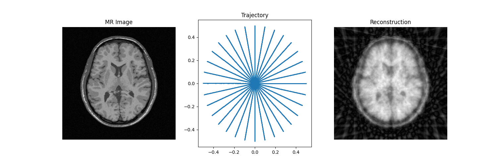
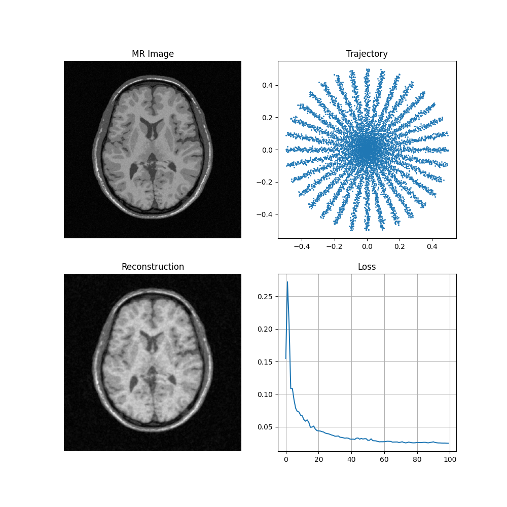

Note
Go to the end to download the full example code. or to run this example in your browser via Binder
Learn Sampling pattern for multi-coil MRI#
A small pytorch example to showcase learning k-space sampling patterns. This example showcases the auto-diff capabilities of the NUFFT operator wrt to k-space trajectory in mri-nufft.
Briefly, in this example we try to learn the k-space samples \(\mathbf{K}\) for the following cost function:
where \(S_\ell\) is the sensitivity map for the \(\ell\)-th coil, \(\mathcal{F}_\mathbf{K}\) is the forward NUFFT operator and \(D_\mathbf{K}\) is the density compensators for trajectory \(\mathbf{K}\), \(\mathbf{x}_\ell\) is the image for the \(\ell\)-th coil, and \(\mathbf{x}_{sos} = \sqrt{\sum_{\ell=1}^L x_\ell^2}\) is the sum-of-squares image as target image to be reconstructed.
In this example, the forward NUFFT operator \(\mathcal{F}_\mathbf{K}\) is implemented with model.operator while the SENSE operator \(model.sense_op\) models the term \(\mathbf{A} = \sum_{\ell=1}^LS_\ell^* \mathcal{F}_\mathbf{K}^* D_\mathbf{K}\). For our data, we use a 2D slice of a 3D MRI image from the BrainWeb dataset, and the sensitivity maps are simulated using the birdcage_maps function from sigpy.mri.
Note
To showcase the features of mri-nufft, we use ``
“cufinufft”`` backend for model.operator without density compensation and "gpunufft" backend for model.sense_op with density compensation.
Warning
This example only showcases the autodiff capabilities, the learned sampling pattern is not scanner compliant as the scanner gradients required to implement it violate the hardware constraints. In practice, a projection \(\Pi_\mathcal{Q}(\mathbf{K})\) into the scanner constraints set \(\mathcal{Q}\) is recommended (see [Proj]). This is implemented in the proprietary SPARKLING package [Sparks]. Users are encouraged to contact the authors if they want to use it.
Imports#
import time
import joblib
import brainweb_dl as bwdl
import matplotlib.pyplot as plt
import numpy as np
import torch
from tqdm import tqdm
from PIL import Image, ImageSequence
from mrinufft import get_operator
from mrinufft.extras import get_smaps
from mrinufft.trajectories import initialize_2D_radial
from sigpy.mri import birdcage_maps
Setup a simple class to learn trajectory#
Note
While we are only learning the NUFFT operator, we still need the gradient wrt_data=True to have all the gradients computed correctly. See [Projector] for more details.
class Model(torch.nn.Module):
def __init__(self, inital_trajectory, n_coils, img_size=(256, 256)):
super(Model, self).__init__()
self.trajectory = torch.nn.Parameter(
data=torch.Tensor(inital_trajectory),
requires_grad=True,
)
sample_points = inital_trajectory.reshape(-1, inital_trajectory.shape[-1])
# A simple acquisition model simulated with a forward NUFFT operator. We dont need density compensation here.
# The trajectory is scaled by 2*pi for cufinufft backend.
self.operator = get_operator("cufinufft", wrt_data=True, wrt_traj=True)(
sample_points * 2 * np.pi,
shape=img_size,
n_coils=n_coils,
squeeze_dims=False,
)
# A simple density compensated adjoint SENSE operator with sensitivity maps `smaps`.
self.sense_op = get_operator("gpunufft", wrt_data=True, wrt_traj=True)(
sample_points,
shape=img_size,
density=True,
n_coils=n_coils,
smaps=np.ones(
(n_coils, *img_size)
), # Dummy smaps, this is updated in forward pass
squeeze_dims=False,
)
self.img_size = img_size
def forward(self, x):
"""Forward pass of the model."""
# Update the trajectory in the NUFFT operator.
# The trajectory is scaled by 2*pi for cufinufft backend.
# Note that the re-computation of density compensation happens internally.
self.operator.samples = self.trajectory.clone() * 2 * np.pi
self.sense_op.samples = self.trajectory.clone()
# Simulate the acquisition process
kspace = self.operator.op(x)
# Recompute the sensitivity maps for the updated trajectory.
self.sense_op.smaps, _ = get_smaps("low_frequency")(
self.trajectory.detach().numpy(),
self.img_size,
kspace.detach(),
backend="gpunufft",
density=self.sense_op.density,
blurr_factor=20,
)
# Reconstruction using the sense operator
adjoint = self.sense_op.adj_op(kspace).abs()
return adjoint / torch.mean(adjoint)
Util function to plot the state of the model#
def plot_state(axs, mri_2D, traj, recon, loss=None, save_name=None):
axs = axs.flatten()
axs[0].imshow(np.abs(mri_2D), cmap="gray")
axs[0].axis("off")
axs[0].set_title("MR Image")
axs[1].scatter(*traj.T, s=1)
axs[1].set_title("Trajectory")
axs[2].imshow(np.abs(recon[0][0].detach().cpu().numpy()), cmap="gray")
axs[2].axis("off")
axs[2].set_title("Reconstruction")
if loss is not None:
axs[3].plot(loss)
axs[3].set_title("Loss")
axs[3].grid("on")
if save_name is not None:
plt.savefig(save_name, bbox_inches="tight")
plt.close()
else:
plt.show()
Setup model and optimizer#
n_coils = 6
init_traj = initialize_2D_radial(32, 256).astype(np.float32).reshape(-1, 2)
model = Model(init_traj, n_coils=n_coils, img_size=(256, 256))
optimizer = torch.optim.Adam(model.parameters(), lr=1e-3)
schedulder = torch.optim.lr_scheduler.LinearLR(
optimizer,
start_factor=1,
end_factor=0.1,
total_iters=100,
)
/volatile/github-ci-mind-inria/gpu_mind_runner/_work/mri-nufft/venv/lib/python3.10/site-packages/mrinufft/operators/interfaces/gpunufft.py:146: UserWarning: no pinning provided, pinning existing smaps now.
warnings.warn("no pinning provided, pinning existing smaps now.")
Setup data#
mri_2D = torch.from_numpy(np.flipud(bwdl.get_mri(4, "T1")[80, ...]).astype(np.float32))
mri_2D = mri_2D / torch.mean(mri_2D)
smaps_simulated = torch.from_numpy(birdcage_maps((n_coils, *mri_2D.shape)))
mcmri_2D = mri_2D[None].to(torch.complex64) * smaps_simulated
model.eval()
recon = model(mcmri_2D)
fig, axs = plt.subplots(1, 3, figsize=(15, 5))
plot_state(axs, mri_2D, model.trajectory.detach().cpu().numpy(), recon)

/volatile/github-ci-mind-inria/gpu_mind_runner/_work/mri-nufft/mri-nufft/examples/GPU/example_learn_samples_multicoil.py:120: DeprecationWarning: __array_wrap__ must accept context and return_scalar arguments (positionally) in the future. (Deprecated NumPy 2.0)
axs[0].imshow(np.abs(mri_2D), cmap="gray")
Start training loop#
losses = []
image_files = []
model.train()
with tqdm(range(100), unit="steps") as tqdms:
for i in tqdms:
out = model(mcmri_2D)
loss = torch.nn.functional.mse_loss(out, mri_2D[None, None])
numpy_loss = loss.detach().cpu().numpy()
tqdms.set_postfix({"loss": numpy_loss})
losses.append(numpy_loss)
optimizer.zero_grad()
loss.backward()
optimizer.step()
schedulder.step()
with torch.no_grad():
# Clamp the value of trajectory between [-0.5, 0.5]
for param in model.parameters():
param.clamp_(-0.5, 0.5)
# Generate images for gif
hashed = joblib.hash((i, "learn_traj", time.time()))
filename = "/tmp/" + f"{hashed}.png"
plt.clf()
fig, axs = plt.subplots(2, 2, figsize=(10, 10))
plot_state(
axs,
mri_2D,
model.trajectory.detach().cpu().numpy(),
out,
losses,
save_name=filename,
)
image_files.append(filename)
# Make a GIF of all images.
imgs = [Image.open(img) for img in image_files]
imgs[0].save(
"mrinufft_learn_traj_mc.gif",
save_all=True,
append_images=imgs[1:],
optimize=False,
duration=2,
loop=0,
)
# sphinx_gallery_thumbnail_path = 'generated/autoexamples/GPU/images/mrinufft_learn_traj_mc.gif'
0%| | 0/100 [00:00<?, ?steps/s]
0%| | 0/100 [00:00<?, ?steps/s, loss=0.15457603]/volatile/github-ci-mind-inria/gpu_mind_runner/_work/mri-nufft/venv/lib/python3.10/site-packages/mrinufft/operators/autodiff.py:98: UserWarning: Casting complex values to real discards the imaginary part (Triggered internally at /pytorch/aten/src/ATen/native/Copy.cpp:308.)
grad_traj = torch.transpose(torch.sum(grad_traj, dim=1), 0, 1).to(
1%| | 1/100 [00:00<01:15, 1.32steps/s, loss=0.15457603]
1%| | 1/100 [00:00<01:15, 1.32steps/s, loss=0.27205044]
2%|▏ | 2/100 [00:01<01:16, 1.29steps/s, loss=0.27205044]
2%|▏ | 2/100 [00:01<01:16, 1.29steps/s, loss=0.20687851]
3%|▎ | 3/100 [00:02<01:18, 1.24steps/s, loss=0.20687851]
3%|▎ | 3/100 [00:02<01:18, 1.24steps/s, loss=0.10856387]
4%|▍ | 4/100 [00:03<01:18, 1.23steps/s, loss=0.10856387]
4%|▍ | 4/100 [00:03<01:18, 1.23steps/s, loss=0.108786285]
5%|▌ | 5/100 [00:04<01:22, 1.15steps/s, loss=0.108786285]
5%|▌ | 5/100 [00:04<01:22, 1.15steps/s, loss=0.0912555]
6%|▌ | 6/100 [00:04<01:18, 1.20steps/s, loss=0.0912555]
6%|▌ | 6/100 [00:05<01:18, 1.20steps/s, loss=0.07850131]
7%|▋ | 7/100 [00:05<01:15, 1.23steps/s, loss=0.07850131]
7%|▋ | 7/100 [00:05<01:15, 1.23steps/s, loss=0.07349685]
8%|▊ | 8/100 [00:06<01:14, 1.23steps/s, loss=0.07349685]
8%|▊ | 8/100 [00:06<01:14, 1.23steps/s, loss=0.07285679]
9%|▉ | 9/100 [00:07<01:13, 1.24steps/s, loss=0.07285679]
9%|▉ | 9/100 [00:07<01:13, 1.24steps/s, loss=0.06779982]
10%|█ | 10/100 [00:08<01:13, 1.23steps/s, loss=0.06779982]
10%|█ | 10/100 [00:08<01:13, 1.23steps/s, loss=0.06689814]
11%|█ | 11/100 [00:08<01:10, 1.26steps/s, loss=0.06689814]
11%|█ | 11/100 [00:09<01:10, 1.26steps/s, loss=0.06109644]
12%|█▏ | 12/100 [00:09<01:08, 1.28steps/s, loss=0.06109644]
12%|█▏ | 12/100 [00:09<01:08, 1.28steps/s, loss=0.058630474]
13%|█▎ | 13/100 [00:10<01:07, 1.28steps/s, loss=0.058630474]
13%|█▎ | 13/100 [00:10<01:07, 1.28steps/s, loss=0.060697537]
14%|█▍ | 14/100 [00:11<01:13, 1.17steps/s, loss=0.060697537]
14%|█▍ | 14/100 [00:11<01:13, 1.17steps/s, loss=0.056914695]
15%|█▌ | 15/100 [00:12<01:10, 1.20steps/s, loss=0.056914695]
15%|█▌ | 15/100 [00:12<01:10, 1.20steps/s, loss=0.04925706]
16%|█▌ | 16/100 [00:13<01:08, 1.22steps/s, loss=0.04925706]
16%|█▌ | 16/100 [00:13<01:08, 1.22steps/s, loss=0.049585745]
17%|█▋ | 17/100 [00:13<01:08, 1.22steps/s, loss=0.049585745]
17%|█▋ | 17/100 [00:14<01:08, 1.22steps/s, loss=0.05115053]
18%|█▊ | 18/100 [00:14<01:06, 1.24steps/s, loss=0.05115053]
18%|█▊ | 18/100 [00:14<01:06, 1.24steps/s, loss=0.046448078]
19%|█▉ | 19/100 [00:15<01:04, 1.25steps/s, loss=0.046448078]
19%|█▉ | 19/100 [00:15<01:04, 1.25steps/s, loss=0.044199735]
20%|██ | 20/100 [00:16<01:02, 1.27steps/s, loss=0.044199735]
20%|██ | 20/100 [00:16<01:02, 1.27steps/s, loss=0.043748543]
21%|██ | 21/100 [00:16<01:01, 1.28steps/s, loss=0.043748543]
21%|██ | 21/100 [00:17<01:01, 1.28steps/s, loss=0.043554008]
22%|██▏ | 22/100 [00:17<01:00, 1.30steps/s, loss=0.043554008]
22%|██▏ | 22/100 [00:17<01:00, 1.30steps/s, loss=0.042676754]
23%|██▎ | 23/100 [00:18<00:59, 1.30steps/s, loss=0.042676754]
23%|██▎ | 23/100 [00:18<00:59, 1.30steps/s, loss=0.042055048]
24%|██▍ | 24/100 [00:19<01:04, 1.17steps/s, loss=0.042055048]
24%|██▍ | 24/100 [00:19<01:04, 1.17steps/s, loss=0.04047487]
25%|██▌ | 25/100 [00:20<01:02, 1.21steps/s, loss=0.04047487]
25%|██▌ | 25/100 [00:20<01:02, 1.21steps/s, loss=0.039752685]
26%|██▌ | 26/100 [00:21<00:59, 1.23steps/s, loss=0.039752685]
26%|██▌ | 26/100 [00:21<00:59, 1.23steps/s, loss=0.039339915]
27%|██▋ | 27/100 [00:21<00:58, 1.25steps/s, loss=0.039339915]
27%|██▋ | 27/100 [00:21<00:58, 1.25steps/s, loss=0.038388453]
28%|██▊ | 28/100 [00:22<00:56, 1.26steps/s, loss=0.038388453]
28%|██▊ | 28/100 [00:22<00:56, 1.26steps/s, loss=0.03742356]
29%|██▉ | 29/100 [00:23<00:55, 1.28steps/s, loss=0.03742356]
29%|██▉ | 29/100 [00:23<00:55, 1.28steps/s, loss=0.036717508]
30%|███ | 30/100 [00:24<00:54, 1.28steps/s, loss=0.036717508]
30%|███ | 30/100 [00:24<00:54, 1.28steps/s, loss=0.03557539]
31%|███ | 31/100 [00:24<00:53, 1.28steps/s, loss=0.03557539]
31%|███ | 31/100 [00:25<00:53, 1.28steps/s, loss=0.035681095]
32%|███▏ | 32/100 [00:25<00:53, 1.28steps/s, loss=0.035681095]
32%|███▏ | 32/100 [00:25<00:53, 1.28steps/s, loss=0.035992883]
33%|███▎ | 33/100 [00:26<00:58, 1.15steps/s, loss=0.035992883]
33%|███▎ | 33/100 [00:26<00:58, 1.15steps/s, loss=0.034133926]
34%|███▍ | 34/100 [00:27<00:56, 1.17steps/s, loss=0.034133926]
34%|███▍ | 34/100 [00:27<00:56, 1.17steps/s, loss=0.033743374]
35%|███▌ | 35/100 [00:28<00:54, 1.19steps/s, loss=0.033743374]
35%|███▌ | 35/100 [00:28<00:54, 1.19steps/s, loss=0.033252936]
36%|███▌ | 36/100 [00:29<00:53, 1.21steps/s, loss=0.033252936]
36%|███▌ | 36/100 [00:29<00:53, 1.21steps/s, loss=0.032606825]
37%|███▋ | 37/100 [00:29<00:51, 1.22steps/s, loss=0.032606825]
37%|███▋ | 37/100 [00:30<00:51, 1.22steps/s, loss=0.03293748]
38%|███▊ | 38/100 [00:30<00:50, 1.23steps/s, loss=0.03293748]
38%|███▊ | 38/100 [00:30<00:50, 1.23steps/s, loss=0.03266595]
39%|███▉ | 39/100 [00:31<00:49, 1.24steps/s, loss=0.03266595]
39%|███▉ | 39/100 [00:31<00:49, 1.24steps/s, loss=0.03141127]
40%|████ | 40/100 [00:32<00:47, 1.25steps/s, loss=0.03141127]
40%|████ | 40/100 [00:32<00:47, 1.25steps/s, loss=0.03100185]
41%|████ | 41/100 [00:33<00:46, 1.27steps/s, loss=0.03100185]
41%|████ | 41/100 [00:33<00:46, 1.27steps/s, loss=0.03128486]
42%|████▏ | 42/100 [00:33<00:45, 1.28steps/s, loss=0.03128486]
42%|████▏ | 42/100 [00:34<00:45, 1.28steps/s, loss=0.030657666]
43%|████▎ | 43/100 [00:34<00:49, 1.16steps/s, loss=0.030657666]
43%|████▎ | 43/100 [00:35<00:49, 1.16steps/s, loss=0.032553382]
44%|████▍ | 44/100 [00:35<00:46, 1.20steps/s, loss=0.032553382]
44%|████▍ | 44/100 [00:35<00:46, 1.20steps/s, loss=0.032933943]
45%|████▌ | 45/100 [00:36<00:45, 1.21steps/s, loss=0.032933943]
45%|████▌ | 45/100 [00:36<00:45, 1.21steps/s, loss=0.031141335]
46%|████▌ | 46/100 [00:37<00:43, 1.23steps/s, loss=0.031141335]
46%|████▌ | 46/100 [00:37<00:43, 1.23steps/s, loss=0.032151394]
47%|████▋ | 47/100 [00:38<00:42, 1.24steps/s, loss=0.032151394]
47%|████▋ | 47/100 [00:38<00:42, 1.24steps/s, loss=0.03134787]
48%|████▊ | 48/100 [00:38<00:41, 1.25steps/s, loss=0.03134787]
48%|████▊ | 48/100 [00:39<00:41, 1.25steps/s, loss=0.03178046]
49%|████▉ | 49/100 [00:39<00:40, 1.26steps/s, loss=0.03178046]
49%|████▉ | 49/100 [00:39<00:40, 1.26steps/s, loss=0.03176754]
50%|█████ | 50/100 [00:40<00:39, 1.27steps/s, loss=0.03176754]
50%|█████ | 50/100 [00:40<00:39, 1.27steps/s, loss=0.029374506]
51%|█████ | 51/100 [00:41<00:38, 1.27steps/s, loss=0.029374506]
51%|█████ | 51/100 [00:41<00:38, 1.27steps/s, loss=0.0293506]
52%|█████▏ | 52/100 [00:42<00:37, 1.27steps/s, loss=0.0293506]
52%|█████▏ | 52/100 [00:42<00:37, 1.27steps/s, loss=0.031612832]
53%|█████▎ | 53/100 [00:43<00:40, 1.15steps/s, loss=0.031612832]
53%|█████▎ | 53/100 [00:43<00:40, 1.15steps/s, loss=0.02879079]
54%|█████▍ | 54/100 [00:43<00:39, 1.18steps/s, loss=0.02879079]
54%|█████▍ | 54/100 [00:44<00:39, 1.18steps/s, loss=0.028641429]
55%|█████▌ | 55/100 [00:44<00:37, 1.21steps/s, loss=0.028641429]
55%|█████▌ | 55/100 [00:44<00:37, 1.21steps/s, loss=0.028494842]
56%|█████▌ | 56/100 [00:45<00:35, 1.23steps/s, loss=0.028494842]
56%|█████▌ | 56/100 [00:45<00:35, 1.23steps/s, loss=0.02757892]
57%|█████▋ | 57/100 [00:46<00:34, 1.24steps/s, loss=0.02757892]
57%|█████▋ | 57/100 [00:46<00:34, 1.24steps/s, loss=0.02703219]
58%|█████▊ | 58/100 [00:46<00:33, 1.25steps/s, loss=0.02703219]
58%|█████▊ | 58/100 [00:47<00:33, 1.25steps/s, loss=0.027154654]
59%|█████▉ | 59/100 [00:47<00:32, 1.26steps/s, loss=0.027154654]
59%|█████▉ | 59/100 [00:47<00:32, 1.26steps/s, loss=0.027122457]
60%|██████ | 60/100 [00:48<00:31, 1.26steps/s, loss=0.027122457]
60%|██████ | 60/100 [00:48<00:31, 1.26steps/s, loss=0.027224086]
61%|██████ | 61/100 [00:49<00:30, 1.27steps/s, loss=0.027224086]
61%|██████ | 61/100 [00:49<00:30, 1.27steps/s, loss=0.02744237]
62%|██████▏ | 62/100 [00:50<00:29, 1.27steps/s, loss=0.02744237]
62%|██████▏ | 62/100 [00:50<00:29, 1.27steps/s, loss=0.027989883]
63%|██████▎ | 63/100 [00:51<00:32, 1.15steps/s, loss=0.027989883]
63%|██████▎ | 63/100 [00:51<00:32, 1.15steps/s, loss=0.027812054]
64%|██████▍ | 64/100 [00:51<00:30, 1.18steps/s, loss=0.027812054]
64%|██████▍ | 64/100 [00:52<00:30, 1.18steps/s, loss=0.027519485]
65%|██████▌ | 65/100 [00:52<00:29, 1.20steps/s, loss=0.027519485]
65%|██████▌ | 65/100 [00:52<00:29, 1.20steps/s, loss=0.026673816]
66%|██████▌ | 66/100 [00:53<00:28, 1.21steps/s, loss=0.026673816]
66%|██████▌ | 66/100 [00:53<00:28, 1.21steps/s, loss=0.026746178]
67%|██████▋ | 67/100 [00:54<00:26, 1.23steps/s, loss=0.026746178]
67%|██████▋ | 67/100 [00:54<00:26, 1.23steps/s, loss=0.026788497]
68%|██████▊ | 68/100 [00:55<00:25, 1.24steps/s, loss=0.026788497]
68%|██████▊ | 68/100 [00:55<00:25, 1.24steps/s, loss=0.02683449]
69%|██████▉ | 69/100 [00:55<00:25, 1.23steps/s, loss=0.02683449]
69%|██████▉ | 69/100 [00:56<00:25, 1.23steps/s, loss=0.025859043]
70%|███████ | 70/100 [00:56<00:24, 1.24steps/s, loss=0.025859043]
70%|███████ | 70/100 [00:56<00:24, 1.24steps/s, loss=0.026597299]
71%|███████ | 71/100 [00:57<00:23, 1.24steps/s, loss=0.026597299]
71%|███████ | 71/100 [00:57<00:23, 1.24steps/s, loss=0.027100176]
72%|███████▏ | 72/100 [00:58<00:23, 1.21steps/s, loss=0.027100176]
72%|███████▏ | 72/100 [00:58<00:23, 1.21steps/s, loss=0.02595866]
73%|███████▎ | 73/100 [00:59<00:24, 1.11steps/s, loss=0.02595866]
73%|███████▎ | 73/100 [00:59<00:24, 1.11steps/s, loss=0.02542812]
74%|███████▍ | 74/100 [01:00<00:22, 1.16steps/s, loss=0.02542812]
74%|███████▍ | 74/100 [01:00<00:22, 1.16steps/s, loss=0.025775176]
75%|███████▌ | 75/100 [01:01<00:20, 1.19steps/s, loss=0.025775176]
75%|███████▌ | 75/100 [01:01<00:20, 1.19steps/s, loss=0.02681707]
76%|███████▌ | 76/100 [01:01<00:19, 1.22steps/s, loss=0.02681707]
76%|███████▌ | 76/100 [01:02<00:19, 1.22steps/s, loss=0.025925681]
77%|███████▋ | 77/100 [01:02<00:18, 1.24steps/s, loss=0.025925681]
77%|███████▋ | 77/100 [01:02<00:18, 1.24steps/s, loss=0.025574215]
78%|███████▊ | 78/100 [01:03<00:17, 1.24steps/s, loss=0.025574215]
78%|███████▊ | 78/100 [01:03<00:17, 1.24steps/s, loss=0.025460035]
79%|███████▉ | 79/100 [01:04<00:16, 1.26steps/s, loss=0.025460035]
79%|███████▉ | 79/100 [01:04<00:16, 1.26steps/s, loss=0.02558972]
80%|████████ | 80/100 [01:04<00:15, 1.27steps/s, loss=0.02558972]
80%|████████ | 80/100 [01:05<00:15, 1.27steps/s, loss=0.026007686]
81%|████████ | 81/100 [01:05<00:14, 1.27steps/s, loss=0.026007686]
81%|████████ | 81/100 [01:05<00:14, 1.27steps/s, loss=0.025885912]
82%|████████▏ | 82/100 [01:06<00:14, 1.28steps/s, loss=0.025885912]
82%|████████▏ | 82/100 [01:06<00:14, 1.28steps/s, loss=0.025770137]
83%|████████▎ | 83/100 [01:07<00:14, 1.16steps/s, loss=0.025770137]
83%|████████▎ | 83/100 [01:07<00:14, 1.16steps/s, loss=0.025871594]
84%|████████▍ | 84/100 [01:08<00:13, 1.19steps/s, loss=0.025871594]
84%|████████▍ | 84/100 [01:08<00:13, 1.19steps/s, loss=0.026245343]
85%|████████▌ | 85/100 [01:09<00:12, 1.21steps/s, loss=0.026245343]
85%|████████▌ | 85/100 [01:09<00:12, 1.21steps/s, loss=0.026234265]
86%|████████▌ | 86/100 [01:09<00:11, 1.23steps/s, loss=0.026234265]
86%|████████▌ | 86/100 [01:10<00:11, 1.23steps/s, loss=0.025646169]
87%|████████▋ | 87/100 [01:10<00:10, 1.24steps/s, loss=0.025646169]
87%|████████▋ | 87/100 [01:10<00:10, 1.24steps/s, loss=0.025495768]
88%|████████▊ | 88/100 [01:11<00:09, 1.25steps/s, loss=0.025495768]
88%|████████▊ | 88/100 [01:11<00:09, 1.25steps/s, loss=0.025930792]
89%|████████▉ | 89/100 [01:12<00:08, 1.26steps/s, loss=0.025930792]
89%|████████▉ | 89/100 [01:12<00:08, 1.26steps/s, loss=0.026561042]
90%|█████████ | 90/100 [01:13<00:07, 1.28steps/s, loss=0.026561042]
90%|█████████ | 90/100 [01:13<00:07, 1.28steps/s, loss=0.027003478]
91%|█████████ | 91/100 [01:13<00:07, 1.28steps/s, loss=0.027003478]
91%|█████████ | 91/100 [01:14<00:07, 1.28steps/s, loss=0.026034206]
92%|█████████▏| 92/100 [01:14<00:06, 1.27steps/s, loss=0.026034206]
92%|█████████▏| 92/100 [01:14<00:06, 1.27steps/s, loss=0.025571298]
93%|█████████▎| 93/100 [01:15<00:06, 1.15steps/s, loss=0.025571298]
93%|█████████▎| 93/100 [01:15<00:06, 1.15steps/s, loss=0.025344133]
94%|█████████▍| 94/100 [01:16<00:05, 1.19steps/s, loss=0.025344133]
94%|█████████▍| 94/100 [01:16<00:05, 1.19steps/s, loss=0.025314324]
95%|█████████▌| 95/100 [01:17<00:04, 1.22steps/s, loss=0.025314324]
95%|█████████▌| 95/100 [01:17<00:04, 1.22steps/s, loss=0.025172742]
96%|█████████▌| 96/100 [01:18<00:03, 1.23steps/s, loss=0.025172742]
96%|█████████▌| 96/100 [01:18<00:03, 1.23steps/s, loss=0.025133003]
97%|█████████▋| 97/100 [01:18<00:02, 1.24steps/s, loss=0.025133003]
97%|█████████▋| 97/100 [01:19<00:02, 1.24steps/s, loss=0.02515986]
98%|█████████▊| 98/100 [01:19<00:01, 1.25steps/s, loss=0.02515986]
98%|█████████▊| 98/100 [01:19<00:01, 1.25steps/s, loss=0.025056858]
99%|█████████▉| 99/100 [01:20<00:00, 1.25steps/s, loss=0.025056858]
99%|█████████▉| 99/100 [01:20<00:00, 1.25steps/s, loss=0.024980508]
100%|██████████| 100/100 [01:21<00:00, 1.26steps/s, loss=0.024980508]
100%|██████████| 100/100 [01:21<00:00, 1.23steps/s, loss=0.024980508]

Trained trajectory#

References#
N. Chauffert, P. Weiss, J. Kahn and P. Ciuciu, “A Projection Algorithm for Gradient Waveforms Design in Magnetic Resonance Imaging,” in IEEE Transactions on Medical Imaging, vol. 35, no. 9, pp. 2026-2039, Sept. 2016, doi: 10.1109/TMI.2016.2544251.
G. R. Chaithya, P. Weiss, G. Daval-Frérot, A. Massire, A. Vignaud and P. Ciuciu, “Optimizing Full 3D SPARKLING Trajectories for High-Resolution Magnetic Resonance Imaging,” in IEEE Transactions on Medical Imaging, vol. 41, no. 8, pp. 2105-2117, Aug. 2022, doi: 10.1109/TMI.2022.3157269.
Chaithya GR, and Philippe Ciuciu. 2023. “Jointly Learning Non-Cartesian k-Space Trajectories and Reconstruction Networks for 2D and 3D MR Imaging through Projection” Bioengineering 10, no. 2: 158. https://doi.org/10.3390/bioengineering10020158
Total running time of the script: (1 minutes 28.432 seconds)